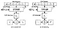
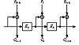

| Previous | Table of Contents | Next |
Synchronous stream ciphers also protect against any insertions and deletions in the ciphertext, because these cause a loss of synchronization and will be immediately detected. They do not, however, fully protect against bit toggling. Like block ciphers in CFB mode, Mallory can toggle individual bits in the stream. If he knows the plaintext, he can make those bits decrypt to whatever he wants. Subsequent bits will decrypt correctly, so in certain applications Mallory can still do considerable damage.
Insertion Attack
Synchronous stream ciphers are vulnerable to an insertion attack [93]. Mallory has recorded a ciphertext stream, but does not know the plaintext or the keystream used to encrypt the plaintext.
Original plaintext: p1 p2 p3 p4 ...
Original keystream: k1 k2 k3 k4 ...
Original ciphertext: c1 c2 c3 c4 ...
Mallory inserts a single known bit, p’, into the plaintext after p1 and then manages to get the modified plaintext encrypted with the same keystream. He records the resultant new ciphertext:
New plaintext: p1 p’ p2 p3 p4 ... Original keystream: k1 k2 k3 k4 k5 ... Updated ciphertext: c1 c’2 c’3 c’4 c’5 ...
Assuming he knows the value of p’, he can determine the entire plaintext after that bit from the original ciphertext and new ciphertext:
k2 = c’2 ⊕ p’, and then p2 = c2 ⊕ k2 k3 = c’3 ⊕ p2, and then p3 = c3 ⊕ k3 k4 = c’4 ⊕ p3, and then p4 = c4 ⊕ k4
Mallory doesn’t even have to know the exact position in which the bit was inserted; he can just compare the original and updated ciphertexts to see where they begin to differ. To protect against this attack, never use the same keystream to encrypt two different messages.
Output-feedback (OFB) mode is a method of running a block cipher as a synchronous stream cipher. It is similar to CFB mode, except that n bits of the previous output block are moved into the right-most positions of the queue (see Figure 9.11). Decryption is the reverse of this process. This is called n-bit OFB. On both the encryption and the decryption sides, the block algorithm is used in its encryption mode. This is sometimes called internal feedback, because the feedback mechanism is independent of both the plaintext and the ciphertext streams [291].
If n is the block size of the algorithm, then n-bit OFB looks like (see Figure 9.12):

Figure 9.11 8-bit output-feedback mode.
Si is the state, which is independent of either the plaintext or the ciphertext.
One nice feature of OFB mode is that most of the work can occur offline, before the plaintext message even exists. When the message finally arrives, it can be XORed with the output of the algorithm to produce the ciphertext.
Initialization Vector
The OFB shift register must also be initially loaded with an IV. It should be unique but does not have to be secret.
Error Propagation
OFB mode has no error extension. A single-bit error in the ciphertext causes a single-bit error in the recovered plaintext. This can be useful in some digitized analog transmissions, like digitized voice or video, where the occasional single-bit error can be tolerated but error extension cannot.
On the other hand, a loss of synchronization is fatal. If the shift registers on the encryption end and the decryption end are not identical, then the recovered plaintext will be gibberish. Any system that uses OFB mode must have a mechanism for detecting a synchronization loss and a mechanism to fill both shift registers with a new (or the same) IV to regain synchronization.

Figure 9.12 n-bit OFB with an n-bit algorithm.
Security Problems with OFB
An analysis of OFB mode [588,430,431,789] demonstrates that OFB should be used only when the feedback size is the same as the block size. For example, you should only use a 64-bit algorithm in 64-bit OFB mode. Even though the U.S. government authorizes other feedback sizes for DES [1143], avoid them.
OFB mode XORs a keystream with the text. This keystream will eventually repeat. It is important that it does not repeat with the same key; otherwise, there is no security. When the feedback size equals the block size, the block cipher acts as a permutation of m-bit values (where m is the block length) and the average cycle length is 2m- 1. For a 64-bit block length, this is a very long number. When the feedback size n is less than the block length, the average cycle length drops to around 2m/2. For a 64-bit block cipher, this is only 232—not long enough.
Stream Ciphers in OFB
A stream cipher can also run in OFB mode. In this case, the key affects the next-state function (see Figure 9.13). The output function does not depend on the key; very often it is something simple like a single bit of the internal state or the XOR of multiple bits of the internal state. The cryptographic complexity is in the next-state function; this function is key-dependent. This method is also called internal feedback [291], because the feedback mechanism is internal to the key generation algorithm.
In a variant of this mode, the key determines just the initial state of the keystream generator. After the key sets the internal state of the generator, the generator runs undisturbed from then on.
| Previous | Table of Contents | Next |
){kind=link}
){kind=link}
){kind=link}
){kind=link}